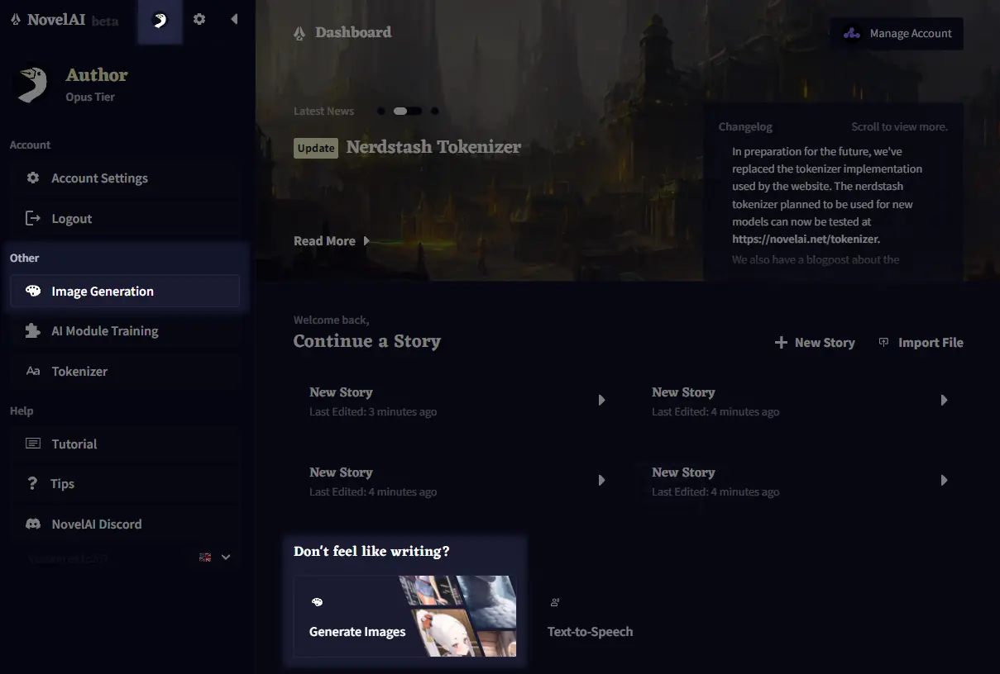
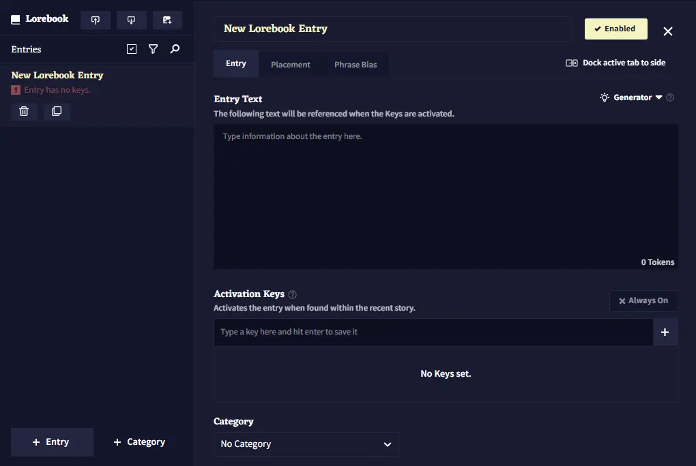

NovelAI 上手测评：图像生成和 AI 写作双料玩家的一周
抱着试试看的心态注册了 NovelAI，一周下来从图像生成到 Lorebook 设定集都踩了坑也挖到了宝。这篇是我的第一手体验：V5 Curated 模型稳在哪、保存按钮多重要、激活键怎么避免误触，以及它最适合谁。
朋友圈里最近半年总有人晒 AI 生成的动漫图——构图干净、风格统一，不像其他平台那样满屏锯齿和崩脸。一问，十有八九是 NovelAI 出的。我本来对"AI 绘图"这个概念有点审美疲劳了，毕竟市面上同类工具太多，能让人用着上瘾的却没几个。但 NovelAI官网 有个点勾住了我：它不只是画图，还带完整的 AI 写作模块。
一个下午从官方下载拿到安装包、注册完账号、充了 Opus 档位，正式上手。说实话第一天的体验有点忙——两个功能面板来回跳，一会儿在图像生成页调分辨率，一会儿又钻进写作编辑器里研究 Lorebook 设定集。一周过去，总算摸出点门道来。
第一眼印象：界面干净但信息量爆炸
NovelAI 的界面设计属于"第一眼清爽、细看才发现门道多"的类型。登录后是仪表盘，核心功能分成两大块——图像生成和故事写作，点左侧栏顶部那只鹅图标就能在用户菜单里快速切换。我一开始把它当成纯绘图工具来用，直到第三天才认真点开写作模块，才发现这东西的定位其实是"创作者的全能助手"。
要说初印象里最别扭的一点，就是所有操作说明都是英文。不是界面语言切换那种能解决的——提示词要写英文标签、激活键的正则语法是英文、甚至模型版本号都是 V4/V5 这种代号。好在中文社区已经整理出了相当完整的novelai文档，后面翻文档才把不少术语对上号。
核心体验一：图像生成，稳是最大的优势
第一次出图的流程我至今记得：从仪表盘点进图像生成卡片，模型选了推荐的 V5 Curated（数据集干净、风格稳，不容易翻车），提示词填了一行英文标签 1girl, silver hair, school uniform, cherry blossoms，分辨率 Normal、张数 1、Steps 默认 23——Generate 按钮一按，等了十几秒进度条走完，一张带着樱花背景的银发少女就出来了。
说实话我没想到它能这么"听话"。之前用别家 AI 绘图，提示词里写了"silver hair"它给我出金色，写了"school uniform"能给我脑补出洛丽塔。NovelAI 在"按标签精确还原"这件事上确实做得好，尤其是 V5 模型，对标签的理解粒度明显更细。打字时还有标签联想，每个标签旁边的圆点越实表示模型越"认识"这个词，新用户跟着提示打就行。

但第一个坑第二天就踩了：生成了七八张满意的图，正挑着最好的一张，手滑点了刷新——全部图像直接蒸发。NovelAI 的图像历史是存在会话级缓存里的，刷新或离开页面就清，必须主动点保存图标。这是新用户丢图的第一大原因，我后来每次生成完第一件事就是保存，连预览都不敢先放大看。
标签不是堆得越夸张越好
一开始我犯了个通病——把能找到的所有质量标签都往提示词里塞：masterpiece, best quality, amazing quality, ultra detailed, ultra complexity，感觉这样出图肯定不会差。结果出的图要么细节糊成一团，要么构图挤得喘不过气。
后来翻了文档才明白，质量标签和审美标签是两套独立体系。masterpiece 是审美标签的顶级档（V4.5 及以上模型才认），跟它并列的还有 top aesthetic、very aesthetic、aesthetic 四档正向，以及 displeasing、very displeasing 两档反向。不要同时堆多个正向标签——选你想要的最高档一个就行。复杂度标签也是同理，V5 专属的 low complexity / medium complexity / high complexity / ultra complexity 四档，日常出图用 high complexity 就够了，ultra complexity 和 low complexity 都是风格化专用，乱用反而翻车。
权重语法，花括号和方括号到底什么时候用
提示词是平等的，但你可以人为分出三六九等——两种语法，一个方向。花括号 {tag} 是加强，每叠一层大约 1.05 倍；方括号 [tag] 是减弱，同比例往反方向走。数值语法 1.5::red hair:: 更精准，直接给标签设权重倍数，比层层套括号可读得多。
什么时候真的需要加减权？ 我总结了两个场景：一是角色特征被场景吞掉的时候——比如你写了个红发角色站在樱花里，模型老是把头发染成粉色，给 red hair 加权重就能抢回主导权；二是某个顽固元素总出现又不想进负面框，减权到 0.7 试试。但有个排查习惯很重要——改权重后固定种子对比，一次只动一个值，否则你永远不知道是哪个改动起效。
核心体验二：Lorebook 设定集，写作模块才是隐形王牌
前三天我几乎没碰写作模块，总觉得"AI 写作不就是续写嘛"。直到第四天陪朋友做了个设定集，才颠覆了这个印象。NovelAI 的写作模块跟别家最大的区别，就是 Lorebook 设定集系统——你可以把所有世界观设定、人物性格、背景故事做成条目，AI 在写作时会自动根据上下文激活对应的条目，把设定注入到生成内容里。
激活键决定了设定集的"反射弧"——键写得糙，条目该来不来、不该来乱来。我做设定集的第一条就踩了坑：给"主角"条目填了多个键（全名、绰号、昵称），以为加个 & 就能同时命中，结果 NovelAI 里多键并列是"任意一个就激活"，要同时命中才触发必须用 NovelAI & Anlatan 这种 AND 组合键写法。改完之后误触少了一大半。

更有意思的是 Always On 功能——打开它的条目无视激活键，永远注入上下文，本质上就是"可折叠的 Memory"。但这里有个坑：别给太多条目开 Always On，上下文窗口预算有限，挤爆了反而会把真正需要的设定顶出去。我试过给六个核心条目全开，结果写出来的对话里全是设定描述，故事节奏直接断了。
如果用的是 GLM 系模型（比如 GLM-4.6），每个条目还能叠加条件式触发——按关键词、按其他条目是否激活、按当前模型或模式、甚至按百分比随机。随机触发那个功能我特别喜欢，做"随机事件池"特别好用，写到某个进度时系统会按概率注入一段剧情设定，AI 的故事走向一下子活了。
适合谁，不适合谁
一周用下来，我对 NovelAI 的定位有了很清晰的判断——它不是"一键出片"的傻瓜工具，是给愿意花时间调参数、做设定的创作者准备的。
- 适合：二次元同人作者、跑团 TRPG 玩家（Lorebook 做世界观简直神器）、喜欢折腾提示词的调参党、想同时解决"出图"和"写文"两个需求的创作者。Opus 档位的免费额度覆盖单张图像生成，故事写作按字数算也够用，日常使用不用额外烧钱。
- 不适合：只想"一句话一键出大片"的小白用户（提示词体系有学习曲线）、只需要中文写作的纯文字创作者（AI 写作模块的中文支持不如英文）、对图像精度有专业级要求的商业项目（NovelAI 擅长动漫风格，写实向不是它的强项）。
如果你刚好同时有画图和写文的需求，真的可以试试看。如果只是想快速出几张图当头像、或者只想找个 AI 续写工具，那市面上有更轻量的选择，没必要在 NovelAI 上花时间调参数。
我这一周的结论就是：NovelAI 最独特的地方，是它把"图像"和"故事"放在了同一个工作流里。画图的时候你可以把出好的角色图直接当参考喂回去，写故事的时候 Lorebook 里的图像设定又能反过来约束 AI 的生成方向。这种绑定关系是我在其他平台上没见过的——单看某一个功能它可能不是最强的，但画图+写作打通之后产生的协同效应，才是它真正的护城河。
这套中文说明文档和我自己整理的 Lorebook 模板，我同步到了三个代码仓库里——GitHub 方便海外用户、Gitee 在国内访问更稳定、GitCode 也留了一份做备份。不管你习惯用哪个平台，直接克隆下来就能看，后续更新也会同步推送。